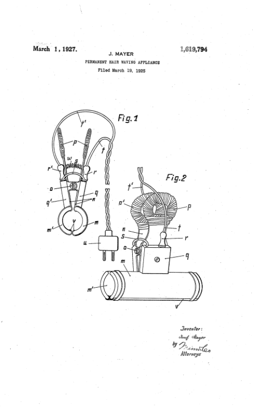

![Illustrative historical-style image for Pioneers & People; design placeholder, not an archival record]()
Hairdressing history cannot be explained through inventions alone. It also depends on people: hairdressers, teachers, technicians, manufacturers, travelling demonstrators, publishers and customers. Their professional relationships help explain how new techniques became known and adopted.
Biography and context
A biography should reconstruct where a person worked, with whom they collaborated and how their activities can be documented. Claims of being “first” require particular caution.
Networks and circulation
Professional knowledge circulated through travel, salons, schools, trade fairs, demonstrations, patents, commercial representatives and specialist publications. These connections are often as historically important as the invention itself.
Research directory
People, inventions and professional networks
Hairdressing history was shaped by inventors, salon practitioners, educators, manufacturers and publishers. Explore documented technical contributions and the historical evidence behind each profile. A patent is not, by itself, proof of commercial success.
Compare two patented machines → · Explore the Innovation Atlas → · Evidence register →
Research profiles
- Karl Ludwig (Charles) Nessler (1872–1951): a central figure in the development and international commercialisation of permanent waving; his dedicated biographical research remains on the Nessler websites.
- Mayer and Gallica: names connected with our wider investigation of early permanent-wave techniques. Their individual roles and chronology will be presented only as documentary evidence is assembled and checked.
- Other pioneers: the scope extends to lesser-known inventors, skilled workers, women in the trade, manufacturers and professional educators.
How a network is reconstructed
- Contemporary trade directories, advertisements and journal reports can establish names, addresses and business relationships.
- Passenger lists, residence records, company registers and patents can help place individuals in time and space.
- An advertisement proves that a claim was published; it does not automatically prove the claim was accurate.
Questions for future profiles
- Who trained whom, and where?
- Which practitioners carried techniques from one country to another?
- Where do later biographical narratives differ from contemporary records?
Explore the sources and projects
Marjorie Stewart Joyner (1896–1994): inventor and educator
Marjorie Stewart Joyner was an American hairdresser, salon owner, inventor and beauty-industry educator. She trained in Chicago and developed a career connected with the Madam C. J. Walker Manufacturing Company and its professional training network.
Professional training and leadership
Joyner graduated from the A. B. Moler Beauty and Culture School in Chicago in 1916. She subsequently developed expertise through the Walker organisation, where she held leadership responsibilities in beauty education. Her career is part of a wider history of Black women’s entrepreneurship, vocational training and professional organisation in the United States.
Her 1928 invention
Joyner filed her application for a Permanent Waving Machine on 16 May 1928; US Patent 1,693,515 was issued on 27 November. The patent names Joyner as inventor and assigns the rights to the Madam C. J. Walker Manufacturing Company. Its design incorporates a suspended group of heated curling irons and devices intended to support their weight and protect the scalp.
Evidence beyond the patent
The Smithsonian preserves curling rods used by Joyner in her Chicago salon, material evidence of her long professional practice. Its exhibition also documents her role in training thousands of Black beauticians. The history of the patent’s commercial distribution, however, should be researched separately.
Sources: US Patent 1,693,515 · Smithsonian: Marjorie Stewart Joyner · Smithsonian collection: permanent rod used by Joyner.
Marcel Grateau: an innovator of temporary thermal waving


The existing biographical research identifies Marcel Grateau (1852–1936) as the French hairdresser associated with the Marcel wave, a heat-styling method commonly dated to the early 1870s. Accounts of his career connect the technique to Parisian salon culture and the professionalisation of controlled tong waving.
Grateau’s achievement should not be confused with Nessler’s later permanent-wave process. The historical distinction is not merely chronological: it concerns the mechanism, duration and practical use of the treatment. The surviving commercial package pictured here illustrates the subsequent marketing of Marcel-style implements, not necessarily an object made by Grateau himself.
Josef Mayer (1881–1952): the international hairdresser behind flat winding

According to the project’s biographical research, Josef Mayer was born on 6 February 1881 in Parabutsch (Parabuć), then in the Kingdom of Hungary. His professional path included Budapest, Vienna and several European cities, followed by a salon career in Karlsbad (Karlovy Vary). The research associates his experiments with flat winding with the winter of 1923–1924.
The patent record provides a firmer technical anchor: US 1,619,794 identifies Josef Mayer of Karlsbad, Czechoslovakia and describes an electrically heated appliance designed for flat strands of hair. The distinction between the biography and the dated patent is important: travel, prizes, teaching credentials and commercial networks require their own corroborating contemporary records.
Primary source: US 1,619,794 (1927). Read the technical analysis.
Other research collections
Comparative technical systems
The Technology & Patents collection now contains a detailed, evidence-labelled catalogue of Nessler, Gallia, Szeemann, Suter, Calvete, Croquignole, Frederics, Mayer and Joyner, alongside the distinct Marcel method. Explore the comparative catalogue →
Explore the wider research collection
This subject is part of a larger, interconnected reference project covering the history of hairdressing—not only permanent waving or one inventor.